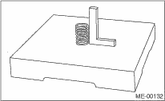

MECHANICAL(H4DO) > Cylinder Head
1. Visually check for cracks and damage. Use liquid penetrant tester on the important sections to check for fissures.
2. Measure the warping of the cylinder head surface that mates with cylinder block using a straight edge (A) and thickness gauge (B). If the warping exceeds the limit, regrind the surface with a surface grinder.
Warping limit:
0.035 mm (0.0014 in)
Grinding limit:
0.3 mm (0.012 in)
Standard height of cylinder head:
127.5 mm (5.02 in)
NOTE:
Uneven torque for the cylinder head bolts can cause warping. When reinstalling, pay special attention to the torque so as to tighten evenly.
Inspect the intake and exhaust valve seats, and correct the contact surfaces with a valve seat cutter if they are defective or when valve guides are replaced.
Valve seat width W:
Standard:
Intake
0.6 — 1.4 mm (0.024 — 0.055 in)
Exhaust
1.2 — 1.8 mm (0.047 — 0.071 in)
Service limit:
Intake
1.7 mm (0.067 in)
Exhaust
2.2 mm (0.087 in)
1. Check the clearance between valve guide and stem. The clearance can be checked by measuring respectively the outer diameter of valve stem with a micrometer and the inner diameter of valve guide with a caliper gauge.
Clearance between the valve guide and valve stem:
Standard:
Intake
0.030 — 0.057 mm (0.0012 — 0.0022 in)
Exhaust
0.040 — 0.067 mm (0.0016 — 0.0026 in)
Service limit:
0.15 mm (0.0059 in)
2. If the clearance between valve guide and valve stem exceeds the limit, replace the valve guide or valve itself whichever shows greater amount of wear. See the following procedure for valve guide replacement.
Valve guide inner diameter:
6.000 — 6.012 mm (0.2362 — 0.2367 in)
Valve stem outer diameters:
Intake
5.955 — 5.970 mm (0.2344 — 0.2350 in)
Exhaust
5.945 — 5.960 mm (0.2341 — 0.2346 in)
(1) Place the cylinder head on ST1 with the combustion chamber upward so that valve guides fit the holes in ST1.
(2) Insert the ST2 into valve guide and press it down to remove the valve guide.
| ST1 498267600 | CYLINDER HEAD TABLE |
| ST2 499767200 | VALVE GUIDE REMOVER |
(3) Turn the cylinder head upside down and place the ST as shown in the figure.
| ST 18251AA020 | VALVE GUIDE ADJUSTER |
(4) Before installing a new valve guide, make sure that neither scratches nor damages exist on the inner surface of valve guide holes in cylinder head.
(5) Put a new valve guide, coated with sufficient oil, in the cylinder head, and insert the ST1 into valve guide. Press in until the valve guide upper end is flush with the upper surface of ST2.
| ST1 499767200 | VALVE GUIDE REMOVER |
| ST2 18251AA020 | VALVE GUIDE ADJUSTER |
(6) Check the valve guide protrusion.
Valve guide protrusion: L
15.8 — 16.2 mm (0.622 — 0.638 in)
(7) Insert the ST in valve guide, and rotate the ST slowly clockwise while pushing it lightly. Bring the ST back while rotating it clockwise. (Reaming Work)
(8) After reaming, clean the valve guide to remove chips.
| ST 499767400 | VALVE GUIDE REAMER |
NOTE:
• Apply engine oil to ST when reaming.
• If the inner surface of valve guide is damaged, the edge of ST should be slightly ground with oil stone.
• If the inner surface of valve guide becomes lustrous and the ST does not chip, use a new ST or remedy the ST.
(9) Recheck the contact condition between valve face and valve seat after replacing the valve guide.
1. Inspect the flange and stem of valve, and replace if damaged, worn, or deformed. If “H” is less than the specified limit, replace with a new valve.
Head edge thickness H
Standard:
Intake (A)
1.0 — 1.4 mm (0.039 — 0.055 in)
Exhaust (B)
1.3 — 1.7 mm (0.057 — 0.067 in)
Service limit:
0.8 mm (0.031 in)
2. Put a small amount of grinding compound on the seat surface, and lap the valve and valve seat. Install a new valve oil seal after lapping.
NOTE:
It is possible to differentiate between the intake valve and the exhaust valve by their overall length.
Valve overall length:
Intake (A)
104.4 mm (4.110 in)
Exhaust (B)
104.65 mm (4.120 in)
1. Check the valve springs for damage, free length, and spring constant. Replace the valve spring if it is not within standard values presented in the table.
2. To measure the squareness of the valve spring, stand the spring on a surface plate and measure its deflection at the top of spring using a try square.
• DOHC Non-turbo model
|
Free length |
46.46 mm (1.829 in) | |
|
Tension/spring height |
Set |
236.2 — 271.8 N (24.1 — 27.7 kgf, 53.1 — 61.1 lb) /36.0 mm (1.417 in) |
|
Lift |
555.7 — 614.3 N (56.7 — 62.6 kgf, 124.9 — 138.1 lb) /25.7 mm (1.01 in) | |
|
Squareness |
2.5°, 2.0 mm (0.079 in) or less | |
• DOHC Turbo model
|
Free length |
47.32 mm (1.863 in) | |
|
Tension/spring height |
Set |
205 — 235 N (20.9 — 24.0 kgf, 46.1 — 52.8 lb) /36.0 mm (1.417 in) |
|
Lift |
426 — 490 N(43.4 — 50.0 kgf, 95.8 — 110 lb)/26.50 mm (1.041 in) | |
|
Squareness |
2.5°, 2.1 mm (0.083 in) or less | |

6. INTAKE AND EXHAUST VALVE OIL SEAL
1. For the following, replace the oil seal with a new part. See the procedure 2) and subsequent for replacement procedures.
• When the lip is damaged.
• When the spring is out of the specified position.
• When readjusting the surfaces of intake valve and valve sheet.
• When replacing the intake valve guide.
2. Place the cylinder head on ST1.
3. Using the ST2, press-fit the oil seal.
| ST1 498267600 | CYLINDER HEAD TABLE |
| ST2 498857100 | VALVE OIL SEAL GUIDE |
NOTE:
• Apply engine oil to oil seal before press-fitting.
• When press-fitting the oil seal, do not use a hammer or strike in.
• The intake valve oil seal and exhaust valve oil seal are differentiated by colors.
Color of rubber part:
Intake [Gray]
Exhaust [Green]
1. Check the valve lifter visually.
2. Measure the outer diameter of valve lifter.
Outer diameter:
34.959 — 34.975 mm (1.3763 — 1.3770 in)
3. Measure the inner diameter of valve lifter mating surface on cylinder head.
Inner diameter:
34.994 — 35.016 mm (1.3777 — 1.3786 in)
NOTE:
If difference between outer diameter of valve lifter and inner diameter of valve lifter mating part is over the limit, replace the cylinder head.
Standard:
0.019 — 0.057 mm (0.0007 — 0.0022 in)
Service limit:
0.100 mm (0.0039 in)